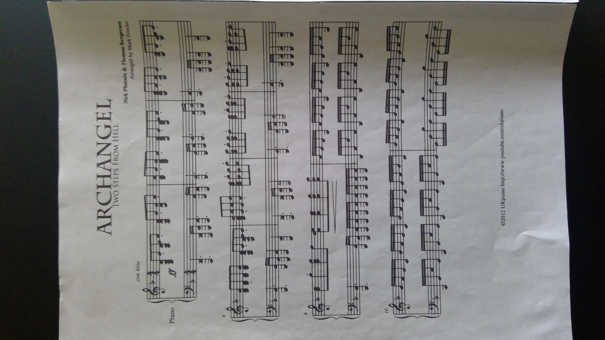

<div id="page" #page class="h-screen relative  h-1000">
    <button #open class="text-red-500 bg-red-50 h-6 fixed z-20 hover:cursor-pointer" #ref1 (click)="open_menu()">Menu</button>
    
    <div  #menu *ngIf="show_menu" class=" w-1/3  flex-col flex justify-center items-center z-20 h-full  ">
        <div #container class="overflow-auto  hover:overflow-y  hide_scroll h-screen fixed top-6 ">
           <div #list >

           </div>
        </div>
        <!-- <div #remaining class="bg-white w-full z-20 flex-grow">testing</div> -->
    </div>
</div>
<!-- <ion-item *ngFor="let plant of plants" [routerLink]="['./', plant.id]"> -->
    